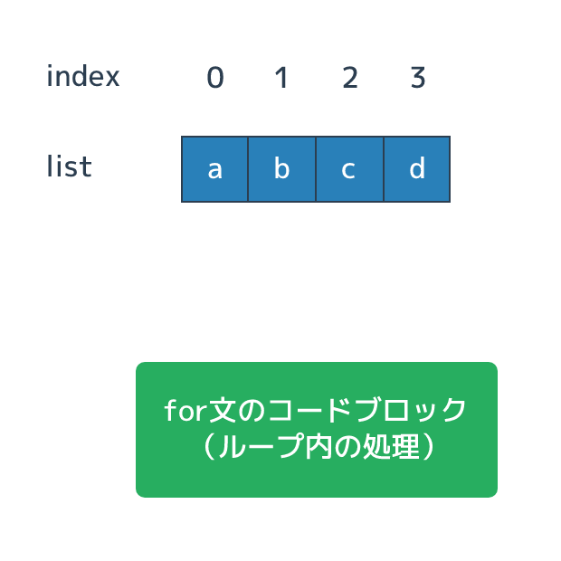

ループ
概要
ループは同じ処理を何度も繰り返すためのプログラミングの制御方法です。
ループを使わずに似たような処理をなんども行う場合は、それを全てプログラムにベタ書きする必要があります。 処理の回数に融通が効かず、無駄に長く、修正を加える場合も大変です。 そのため、同じ処理を繰り返す場合はループを使います。
Pythonのループ処理は「for文」か「while文」を使います。 for文はリスト型の値(もしくはそれに似た型の値)の要素に対してなんらかの処理を繰り返すような使い方をし、 whileは条件式を満たすまでループ処理を繰り返すという使い方をします。
forによるループ
プログラミングの制御構造に「同じ処理を何度も繰り返す」というものがあり、それは「 ループ 」と呼ばれています。 ループは少し複雑なプログラムでは必須となるテクニックです。
「 for文 」はPythonでループ処理をするための文法です。 for文に与えたリストの全ての要素に対して、同じ処理を実施します。

for文はif文と同じく制御のルールを書いた後で、実行する処理を書くコードブロックを続けます。 for文の構造は「 for 変数 in リスト: 」とすると、リストのヘッド(インデックス0)から要素を取り出して変数に格納し、 for文のコードブロックを実行します。
for文のコードブロックの処理が終了すると、次の要素を取り出してコードブロックを再度実行します。 これをリストの全てに対して行うまで繰り返します。
コード: for文
a = [1,2,3,4,5] print('start') for i in a: print(i) print('end')
出力
start 1 2 3 4 5 end
for文の構文のなかで必ずしも様子を格納する変数を使う必要はありません。 また、要素の数が0であるリストを渡された場合は一度も処理を実行しないだけです。
ループ処理の必要性
たとえば「クラス全員のテストの平均点を求める」という処理を自分で実装するとしましょう。 ループを使わなければ生徒全員の点数を「78 + 82 + 64 + 74 + ...」として合計値を求め、 それを人数で割るというという処理をします。
この時、生徒の人数が変わると足し合わせる処理の数が増減し、 割り算の値も変わります。 プログラムの処理が生徒の数に依存しているということです。
4人の平均のプログラムは上記のものとなります。
s1 = 78 s2 = 82 s3 = 64 s4 = 74 sum_score = s1 + s2 + s3 + s4 ave_score = sum_score / 4
5人目を追加すると以下のようになりました。
s1 = 78 s2 = 82 s3 = 64 s4 = 74 s5 = 98 sum_score = s1 + s2 + s3 + s4 + s5 ave_score = sum_score / 5
新しい変数の作成、合計値の取得、割り算でコードが変更されています。
リストとfor文を使うとプログラムは以下のようになります。
students_score = [78, 82, 64, 74] sum_score = 0 num_students = 0 for score in students_score: sum_score += score num_students += 1 ave_score = sum_score / num_students
少し長く難しくなっていますが、以下のようになっています。
- 生徒ごとに変数を作るのではなくリストの要素とした
- 合計値の変数を作り、それに生徒の点数をループで足していく
- 生徒数の変数を作り、それに生徒の人数をループで足していく
- 合計値と生徒数から平均値を求める
このプログラムは先ほどのループを使わないプログラムと異なり、 生徒の合計点を得る処理と、頭数での割り算の処理は生徒の人数に依存していません。 10人だろうと、100人だろうと同じです。
students_score = [78, 82, 64, 74, 98] sum_score = 0 num_students = 0 for score in students_score: sum_score += score num_students += 1 ave_score = sum_score / num_students
for の変数名
for文を書く際に注意すべきなのは取り出した値を格納する変数の名前付けです。 プログラムとしては変数名として有効なものであれば何を書いても動くのですが、 一般的には以下のようなルールがあります。
- リストなどのシーケンスの変数名に対応する単数形の名前
- 順番に並んだ数字の場合は i, j, k (i が既に使われていれば j といった具合)
- リストや文字列から取り出す「一文字」は c (character の c)
例えばリストとして students という複数形があればそれを取り出す変数は student といった具合です。 自分でプログラムを開発する場合はこのような名前付けになるように注意を払って下さい。 サンプルプログラムなどで数字の配列に対して for 文を回す場合は i という変数名を使うことも多いですが、 これは index という単語から来ています。 i が既に使われている場合は j, k と使っていくのですが、 これは単に ijk というアルファベットとしての並びがあるからです。 l (小文字のL)は数字の1や大文字のI (i)と見分けが使いにくいので使用は避けることが望ましいとされています。 変数名としてよい名前が浮かばないときに i が使われることも多いのですが、あまりよい使い方ではありません。
forをシーケンス型に使う
for文はリスト型以外でも使うことができます。 たとえば文字列にたいしてfor文を使うと、文字列を構成する文字ごとにループを回すことができます。
text = 'hello' for character in text: print(character)
h e l l o
ただ、どのような型にもfor文を使えるかというわけではなく、 たとえば数値型にたいしては使えません。
number = 10 for i in number: print(i)
Traceback (most recent call last):
File "sample.py", line 2, in <module>
for i in number:
TypeError: 'int' object is not iterable
実行時のエラーに「TypeError: 'int' object is not iterable」とあり、 これを日本語に訳すと「整数型のデータはイテレート処理できない」となります。
「 イテレート 」はリスト型などのデータ集合で、全ての要素に対して処理を実行する手法のことです。
リストは要素の集合で、文字列は文字の集合のためイテレート処理ができます。 一方、数値型(整数型)は集合でないためイテレート処理ができません。
リストや文字列型以外にもループを使える型があり、それらは総称して「 シーケンス型 」と呼ばれています。
while によるループ
「 while文 」もfor文と同じくループ処理のための制御構造です。 両者はループを回すためのルールが異なっており、whileは「 条件式がTrueなら処理を繰り返す 」という動きをします。
while文は「 while 条件式: 」を書き、それに続けて処理をするためのコードブロックが続きます。
a = 5 print('start') while a > 0: print(a) a -= 1 print('end')
start 5 4 3 2 1 end
for文はループを回す回数が限られています。 一方、whileは条件式がTrueである限り何周でもするため、条件式がFalseにならないと永遠にループをし続けます。 このような終わりのないループは「 無限ループ 」と呼ばれています。
break
for文によるループは全ての要素を処理するまで回り続け、 whileによるループは条件式を満たさなくなるまで回り続けます。
ただ、「もうループを回す必要がない」という状況になることがあります。 その場合には「 break文 」を使ってループ処理を打ち切ります。
たとえばリストの中から特定の条件を満たす要素があるか否かということを調べるとします。 今回は「5である」という条件とします。
リストを先頭から順にループで調べていき、そこで5という要素を見つけた場合は、 それ以後のループは回す必要がありません。 なぜなら5が存在するかどうかを調べているため、 存在することが分かった時点でそれより後ろの要素を調べる必要がなくなるからです。 そういった状況でbreak文を使ってループを終了します。
break文を使った要素5を探すプログラムを書くと以下のようになります。
a = [3, 9, 10, 4, 5, 1, 8, 5, 3] has_5 = False for i in a: print(i) if i == 5: has_5 = True break print("List has 5: " + str(has_5))
3 9 10 4 5 List has 5: True
ループで何かを探す際によく使われるテクニックですが、 ループの前に「探している要素が存在するか」という変数を作って、 そこに「存在しない」ということでFalseを代入しておきます。
ループを回した時に要素をチェックし、それが探している値(今回だと5)であれば「存在する」としてTrueを代入します。 そして以後はループを回す必要がないのでbreak文でループを打ち切ります。 ループが終わった場所で「探している要素が存在するか」という変数を調べれば、あったかなかったかが分かります。
このループ処理では要素を毎回print出力しています。 3から5までは各要素が出力されていますが、5以降の1と8は出力されていません。 ここから要素が5であった際にbreak文を呼び出してループを抜け、残りの要素はループ処理されていないことが分かります。
continue
ループを回している際に「この回は条件を満たしていないので、処理をしなくていい」という状況になることがあります。
たとえばループで要素5に対してだけ処理をしたい場合であれば、要素が5以外であった場合は処理を継続する必要はありません。 ただ、先ほどのbreakとは異なり、リストの残りの要素も処理するためループ自体は終了できないとします。
このような場合は「 continue文 」を使うことで、いま実行されている回の処理を打ち切ります。 打ち切った後はループを抜けるのではなく、for文の場合は次の要素で処理を開始し、 while文の場合は条件式のチェックからやり直します。
リストの要素が5であった場合のみprint処理をするプログラムを記載します。
a = [3, 9, 10, 4, 5, 1, 8, 5, 3] for i in a: print(i) if i != 5: continue print('Found 5')
3 9 10 4 5 Found 5 1 8 5 Found 5 3
continueを呼び出した後は以後の処理がされなくなるため、 「5でない要素」は「'Found 5'」と出力がありません。
continue文の代わりにif文で同じことを実現することもできます。 たとえば上記であれば「5であれば'Found 5'と出力」としたほうが簡単です。
ただ、continueを使うと実行する条件が複雑な時にプログラムがシンプルに組める場合が多いです。 また、処理を打ち切っているということが明確に分かるので、 その回の処理を飛ばす際はcontinueの利用を検討してください。